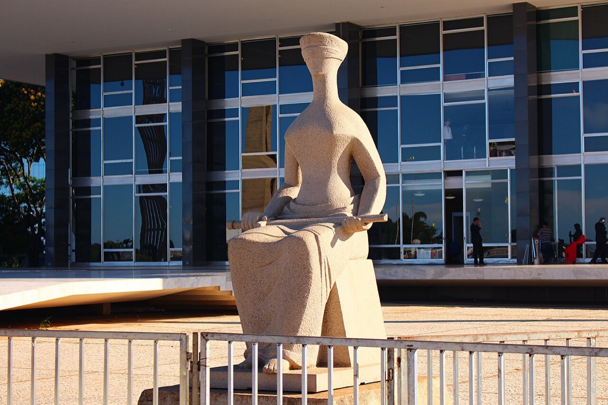
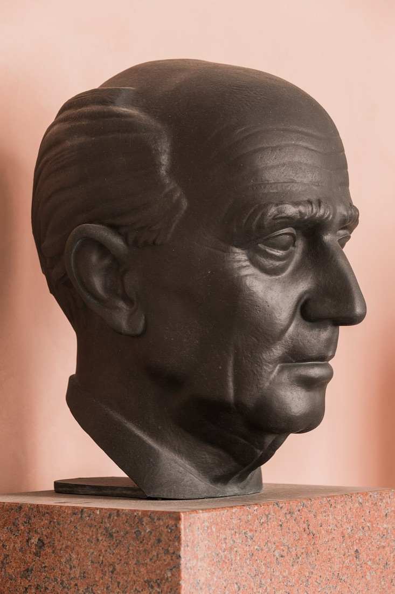
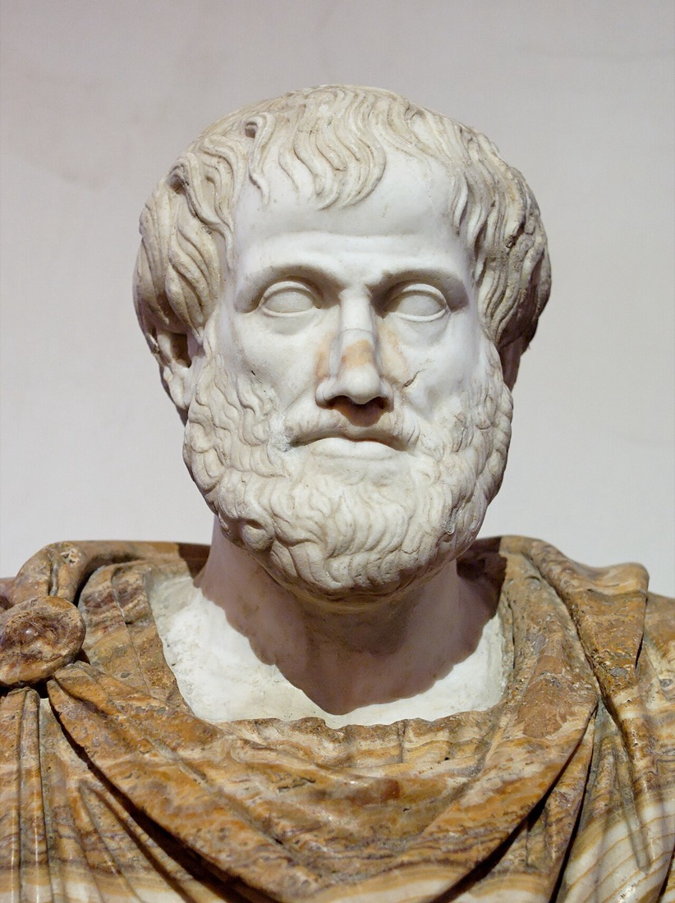
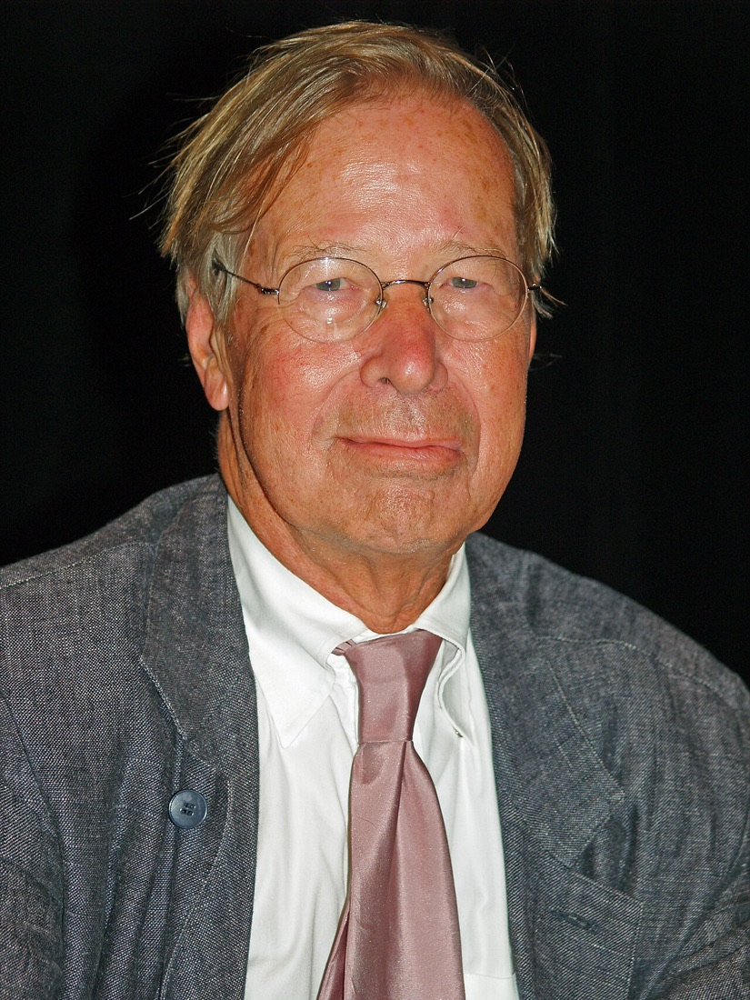
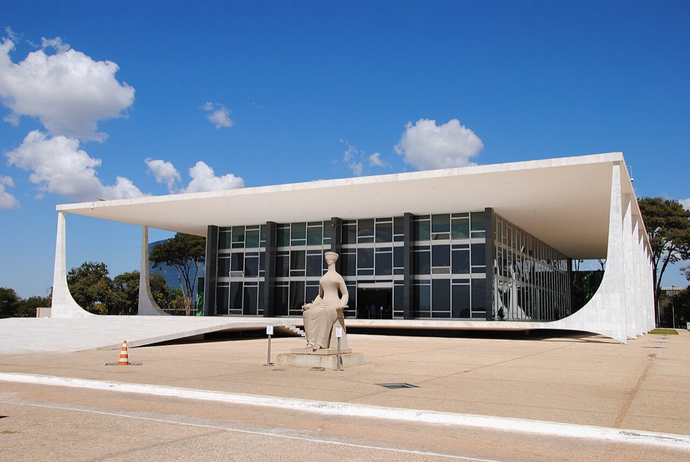

Argumentação Jurídica
Habermas e Alexy

Ponderar é dar peso aos princípios.
Quem confere a balança?

“Quanto maior é o grau de não satisfação ou de prejuízo de um dos princípios, tanto maior deve ser a importância da satisfação do outro.”Alexy, a lei da ponderação
Leve, médio ou grave.
Mas quem disse que é grave?
Sem justificativa, o peso é só a vontade do juiz.
O peso precisa ser justificado com argumentos.
Por isso ele tem uma teoria da argumentação jurídica.
Habermas
A teoria do discurso
Fato, gosto ou outra coisa?
Para Kelsen, justiça é como gosto.
Relativa. Fora da ciência.
Habermas discorda.

Questões práticas também admitem razão.
Correspondência
A frase bate com o mundo.

Consenso racional
A frase resistiria à discussão com todos.
“A condição para a verdade dos enunciados é o assentimento potencial de todos os demais.”Habermas
Nas questões práticas, a verdade tem outro nome:
correção.
Mas qualquer consenso vale?
Só vale o consenso obtido seguindo regras.
“Há, portanto, identidade no discurso entre racionalidade e correção.”Cláudia Toledo
A situação ideal de fala
Ela não existe em lugar nenhum.
É uma ideia reguladora: a régua com que medimos os debates reais.
Lembre um debate real: CPI, júri, reunião de condomínio.
O que faltou para ser ideal?
Alexy
A teoria da argumentação jurídica
As regras do discurso racional
“Indefiro o pedido, por ausência dos requisitos legais.”
É a decisão inteira.
Fundamentação
CF, art. 93, IX: decisão sem fundamentação é nula.
Em março, o juiz condena o banco por dano moral. Em abril, em caso idêntico, absolve. Não explica a diferença.
Coerência
Casos iguais, mesmo tratamento.
Integridade
CPC, art. 926: jurisprudência estável, íntegra e coerente.

Na audiência pública, o presidente só dá a palavra a quem apoia o projeto.
Participação
Qualquer um pode falar e questionar, sem coerção.
“A liberdade de expressão é absoluta.”
Três páginas depois: “Mantenho a proibição do livro.”
Não contradição
A advogada defende com veemência uma tese em que não acredita.
Sinceridade?
Mas advogada pode. E agora?
No processo, as partes querem ganhar, não achar a resposta correta.
Alexy: mesmo assim, ninguém pede “condene, ainda que seja injusto”.
O discurso jurídico é um caso especial do discurso prático geral.
Por quê?
As limitações
Pode prender depois da 2ª instância?
No bar: “A impunidade revolta.”
No tribunal: CF, art. 5º, LVII. ADCs 43, 44 e 54.

No tribunal, o argumento moral precisa passar pela lei, pelo precedente e pela dogmática.
“No caso de colisão entre normas, o juiz deve justificar o objeto e os critérios gerais da ponderação efetuada [...].”CPC, art. 489, § 2º
Quem pondera tem de justificar o peso.
Juiz não é eleito.
De onde vem a legitimidade da decisão?
Dos argumentos, que qualquer pessoa pode conferir e criticar.
“Se se trata de um Estado Democrático de Direito, são imprescindíveis teorias da argumentação jurídica [...].”Cláudia Toledo
Uma editora publica a biografia de um cantor famoso, sem autorização. Ele pede a proibição do livro.
Liberdade de expressão ou privacidade?
Que peso você dá a cada uma? Justifique.
Biografia não depende de autorização prévia.
O abuso se resolve depois, com reparação.
Dois ministros, o mesmo método, resultados opostos.
O uso da proporcionalidade é adequado para combater o poder discricionário do julgador?
Para levar
Seminário 12
Streck: a discricionariedade em Dworkin e em Alexy
Vitor Medrado
Imagens do Wikimedia Commons: Jürgen Habermas (Wolfram Huke, CC BY-SA 3.0); Robert Alexy (Contrib32523, CC BY-SA 4.0); Aristóteles, Palazzo Altemps (domínio público); busto de Hans Kelsen (Hubertl, CC BY-SA 4.0); Ronald Dworkin (David Shankbone, CC BY-SA 3.0); A Justiça (Filipo Tardim, CC BY-SA 4.0); Supremo Tribunal Federal (Leandro Neumann Ciuffo, CC BY 2.0). Fotos recortadas.